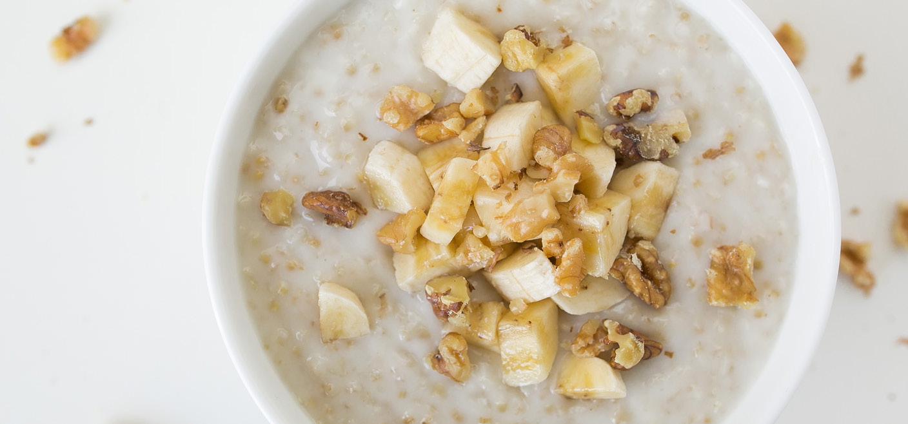

02
Steel Cut Oatmeal with Frozen Berries and Walnuts
If you’ve never made oatmeal with steel cut oats, definitely give them a go with this recipe. We use coconut milk for extra creaminess and a little sweetness too (most cans contain 2 cups but don’t worry, you’ll use the rest in this weekend’s curried sweet potato soup!). This fiber-filled base serves as a blank palette for a variety of toppings - sweet and savory. We’ve chosen frozen fruit one morning and fresh sliced bananas the next, but feel free to try it with whatever you love best!

Make
01.
Bring water and coconut milk to a boil in a large saucepan or Dutch oven. (If you have a rice cooker, you can also just combine all ingredients but fruit in the rice cooker, and hit the porridge setting if you have one. Otherwise, just hit cook.)
02.
Stir in oats, brown sugar, and salt. Simmer for 45 to 55 minutes, until oats are tender.
03.
Divide in half. Stir frozen berries into one half and sliced bananas into the other half. Store in two separate containers or if you plan on taking them to-go and have plenty of Tupperware, divide each half into 4 separate containers and sprinkle with walnuts.
04.
To reheat for breakfast, use your microwave re-heat setting or microwave on high for 1 to 1 ½ minutes, stirring once midway through.